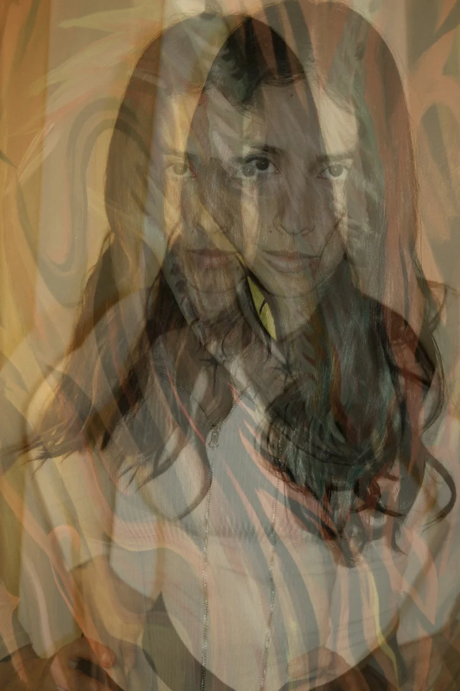

Florencia Jerez is an Argentinian artist based in Porto. She studied art in Tucumán, Argentina, and returned to painting in 2014 after a career change.
Her work has been sold and exhibited in Argentina, the United States, and the United Kingdom, and she has been interviewed for her work in Paris.
She works mainly with acrylic on canvas, with a preference for large format.

My inspiration mainly comes from nature. I observe even the simplest details, such as plants, light, textures, and color, and feel amazed by how these elements carry a quiet complexity. Painting becomes a space where I let go, allowing emotions to move freely through gesture and take form on the canvas. Through this process, I explore contrasts that coexist within us, such as calm and intensity, fragility and strength, simplicity and depth. My work reflects an ongoing curiosity about human nature and connection — how we feel, relate, and find meaning in what surrounds us.
Acrylic on canvas with mixed-media exploration — sand, fabric, wood, plaster — and large-scale murals.
Ongoing exploration of human connection and the relationship between nature and emotions as artistic material.